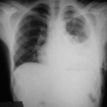

Inicio
Artículos
Enciclopedia médica: hemotorax

Descripición general
Es una acumulación de sangre en el espacio existente entre la pared torácica y el pulmón (la cavidad pleural).
Síntomas
El paciente puede tener diferentes síntomas:
- Ansiedad
- Dolor torácico
- Presión arterial baja
- Piel pálida, fría y húmeda
- Frecuencia cardíaca acelerada
- Respiración rápida y superficial
- Inquietud
- Dificultad para respirar
Causas
Las causas más comunes son:
- Un defecto en la coagulación de la sangre
- Cirugía en el pecho (torácica) o del corazón
- Muerte del tejido pulmonar (infarto pulmonar)
- Cáncer pulmonar o pleural -- ya sea primario o secundario (metastático o de otro lugar)
- Una ruptura en un vaso sanguíneo al colocar un catéter venoso central, o cuando se asocia con presión arterial alta grave
- Tuberculosis
Tratamiento
Se introduce una sonda pleural a través de la pared del tórax entre las costillas con el fin de drenar la sangre y el aire.
La sonda se deja puesta y queda sujeta a succión durante varios días para volver a expandir el pulmón.
Pruebas y exámenes
Los signos o descubrimientos de hemotórax se pueden observar en los siguientes exámenes:
- Radiografía de tórax
- Tomografía computarizada
- Toracocentesis (drenaje del líquido pleural a través de una aguja o una sonda)
- Toracotomía (drenaje del líquido pleural a través de una sonda pleural)